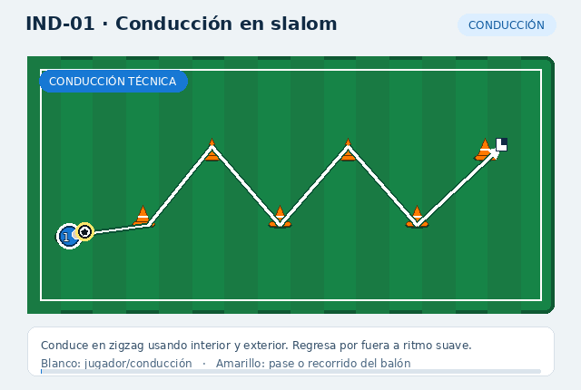

IND-01 · Conducción en slalom1 jugador · iniciación · 10 min
Conduce en zigzag usando interior y exterior. Regresa por fuera a ritmo suave.
Secuencia: Conducción técnica → Cambio o gesto → Salida controlada
Secuencia: Conducción técnica → Cambio o gesto → Salida controlada